第01讲 线段、射线、直线
第01讲 线段、射线、直线

课程标准 | 学习目标 |
①了解直线、射线与线段的概念 ②掌握直线、射线、线段的表示方法和画法. | 1．了解直线、射线与线段的概念；理解两点确定一条直线的事实； 2．掌握直线、射线、线段的表示方法和画法，以及它们的联系与区别. |


知识点01 线段、射线、直线的概念
1.线段的表示也有两种：一个小写字母或用端点的两个大写字母.但前面必须加“线段”两字，如：线段a；线段AB.
2.射线的表示同样有两种：一个小写字母或端点的大写字母和射线上的要给大写字母，前面必须加“射线”两字
3.直线的表示有两种：一个小写字母或两个大写字母.但前面必须加“直线”两字，如：直线 ；直线m，直线AB；直线CD
；直线m，直线AB；直线CD
基本概念：
名称 | 直线 | 射线 | 线段 |
图形 |
|
|
|
端点个数 | 无 | 一个 | 两个 |
表示法 | 直线 直线AB（BA） | 射线 射线AB | 线段 线段AB（BA） |
作法叙述 | 作直线 作直线AB | 作射线 作射线AB | 作线段 作线段AB 连接AB |
延长 | 向两端无限延长 | 向一端无限延长 | 不可延长 |

【即学即练1】
1．（23-24六年级下·全国·假期作业）如图，表示方法正确的是（ ）
A．①② B．②④ C．③④ D．①④
【答案】B
【分析】本题主要考查了直线、射线和线段的表示方法，根据直线、射线和线段的表示方法逐项进行判断即可．
【详解】解：不能用一个大写字母表示直线，故①错误；
可以用一个小写字母表示射线，故②正确；
③中的射线应表示为射线 ，故③错误；
，故③错误；
可用表示线段两个端点的大写字母表示线段，故④正确；
综上，表示方法正确的只有②④．
故选：B．
2．（23-24六年级下·山东烟台·期中）在日常生活中，手电筒发射出来的光线，类似于 ．（填“折线”或“线段”或“射线”或“直线”）
【答案】射线
【分析】本题主要考查射线的定义，根据直线，射线和线段的区别即可得出答案．
【详解】手电筒可近似看成一个点，所以手电筒发射出来的光线相当于一个从一个端点出发的一条射线，
故答案为：射线．
3．（23-24六年级下·全国·假期作业）根据如图所示的图形填空：

(1)点B在直线 _________，点C在直线_________；
_________，点C在直线_________；
(2)点E是直线与_________直线_________的交点，直线 与直线
与直线 相交于点_________；
相交于点_________；
(3)过点A的直线有_________条，分别是__________________．
【答案】(1)上，外
(2)
(3)3，直线 ，直线
，直线 ，直线
，直线
【分析】本题考查了直线、射线、线段，熟练掌握点与直线的位置关系是解题的关键．
（1）观察图形，根据点与直线的位置关系进行判断即可；
（2）确定经过点E的直线是哪两条即可得出结论；观察图形确定直线与直线的交点即可；
（3）观察图形确定过点A的直线即可解答．
【详解】（1）解：点B在直线上，点C在直线外，
故答案为：上，外；
（2）解：点E是直线与直线 的交点，直线与直线相交于点F，
的交点，直线与直线相交于点F，
故答案为：；
（3）解：过A点的直线有3条，分别是直线，直线，直线，
故答案为：3，直线，直线，直线．
知识点02 直线的性质
经过两点有一条直线，并且只有一条直线.简单地：两点确定一条直线. 两条直线相交，只有一个交点.
【即学即练2】
1．（23-24七年级上·贵州贵阳·期末）墨斗被认为是“百作手艺祖师爷”鲁班的发明，是木匠用来弹、放各种线记的重要工具，以其“绳之以墨”的功能成为了文人墨客心中正直的化身．如图，经过刨平的木板上的两个点，能弹出一条笔直的墨线，而且只能弹出一条墨线，能解释这一实际应用的数学知识是 ．

【答案】两点确定一条直线
【分析】本题主要考查两点确定一条直线，熟练掌握这一知识点是解题的关键．根据题意可直接进行求解．
【详解】解：由题意得：能解释这一实际应用的数学知识是两点确定一条直线．
故答案为：两点确定一条直线．

题型01 直线、射线、线段的联系与区别
【典例1】（2024·河北邢台·三模）下列图形中，可以表示为“线段 ”的是（ ）
”的是（ ）
A． B．
B．
C． D．
D．
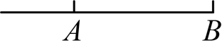
【答案】C
【知识点】直线、射线、线段的联系与区别
【分析】根据线段的性质即可得解．线段是直线的一部分，有两个端点．熟练掌握线段的性质是解题的关键．
【详解】A、是直线，不符合题意；
B、是射线，不符合题意；
C、是线段，符合题意；
D、是射线，不符合题意；
故选：C．
【变式1】（23-24六年级下·全国·假期作业）图中直线的表示方法，不正确的有（ ）

A．1个 B．2个 C．3个 D．4个
【答案】D
【知识点】直线、射线、线段的联系与区别
【分析】本题主要考查了直线的表示方法，一条直线可以用两个大写字母或一个小写字母表示，根据直线的表示方法进行判断即可．
【详解】解：图中直线 、
、
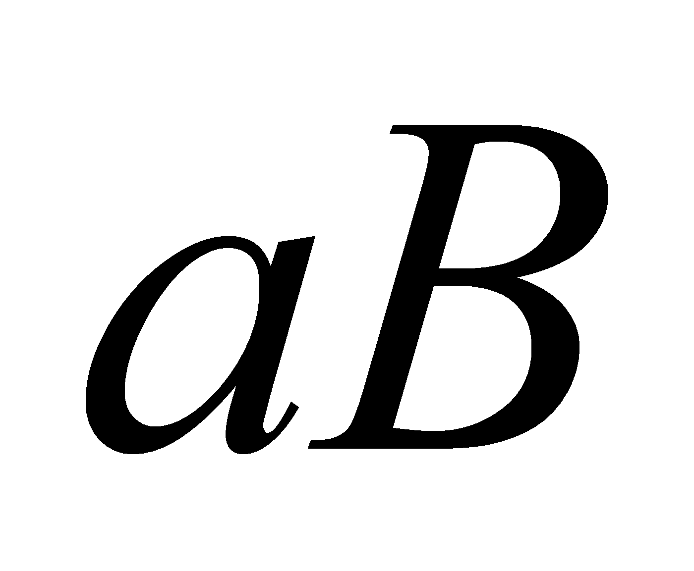
、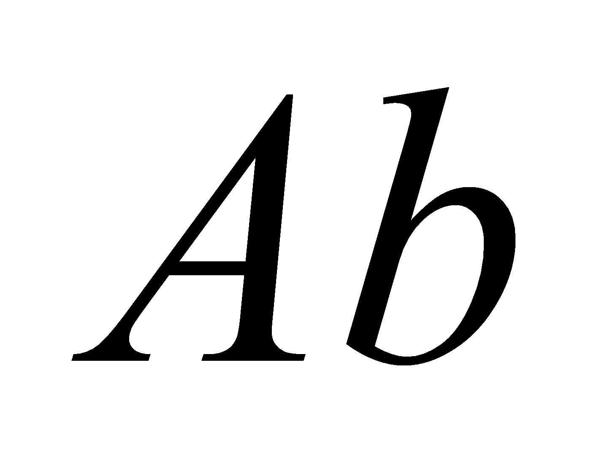
、A表述错误，直线表示正确，因此图中直线的表示方法，不正确的有4个．故选：D．
【变式2】（23-24七年级上·河南平顶山·期末）如图，对于图中直线的描述，正确的是（ ）

A．图中有直线
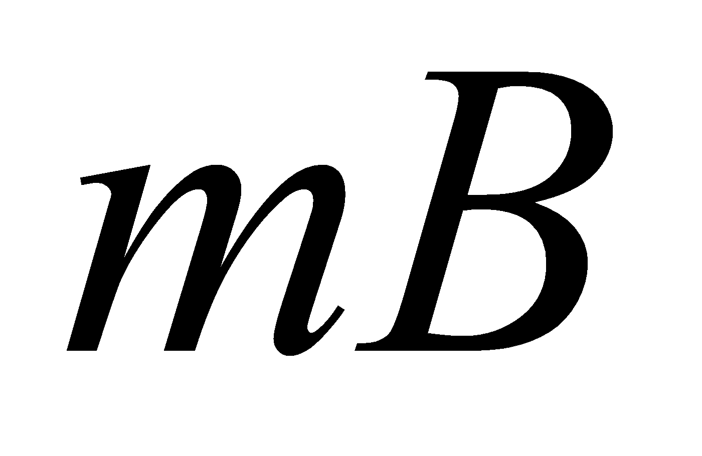
B．图中有直线
C．直线 与直线交于点O D．直线
与直线交于点O D．直线
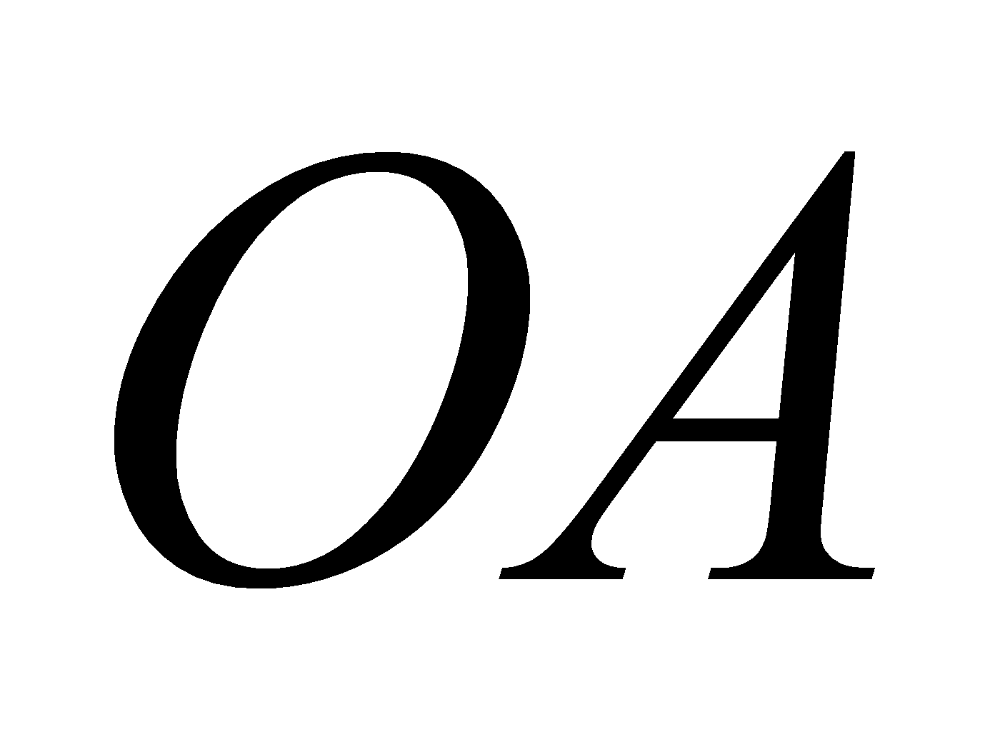
与直线m交于点O【答案】D
【知识点】直线、射线、线段的联系与区别
【分析】本题考查的是直线的表述方法，直线与直线的交点的含义，根据直线的表示方法逐一判断即可．
【详解】解：图中有直线 ，直线
，直线 ，直线，直线
，直线，直线 ，
，
直线与直线交于点O，直线与直线m交于点O，
∴A，B，C错误，不符合题意；D正确，符合题意；
故选：D．
【变式3】（23-24七年级上·全国·单元测试）小明根据下列语句，分别画出了图形 ，并将图形的标号填在了相应的“语句”后面的横线上．其中正确的是（ ）
，并将图形的标号填在了相应的“语句”后面的横线上．其中正确的是（ ）

①直线 经过点
经过点 三点，并且点
三点，并且点 在点
在点 与
与 之间；
之间；
②点在线段的反向延长线上；
③点 是直线
是直线 外一点，过点的直线与直线相交于点
外一点，过点的直线与直线相交于点 ；
；
④直线
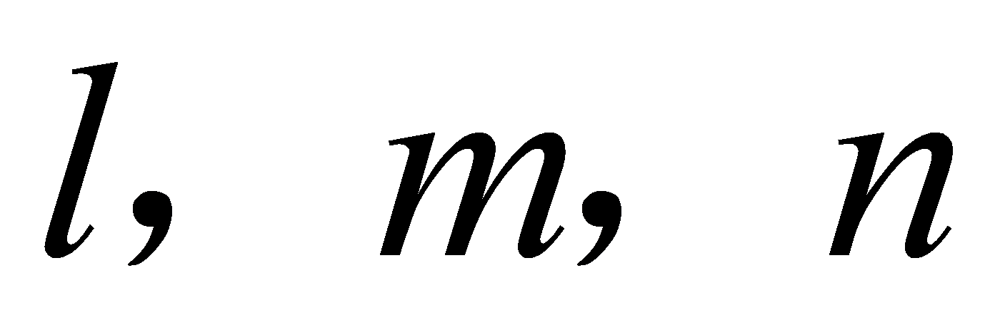
相交于点 ．
． A．①②③④ B．①②④ C．①③④ D．②③
【答案】A
【知识点】直线、射线、线段的联系与区别
【分析】本题考查了直线，射线和线段的知识，熟练掌握以上知识是解题的关键．
根据直线是向两方无限延伸、射线是向一方无限延伸和线段不能向任何一方延伸的定义分析即可．
【详解】解：①直线经过点三点，并且点在点与之间，，正确；
②点在线段的反向延长线上，，正确；
③点是直线外一点，过点的直线与直线相交于点，，正确；
④直线相交于点，，正确；
故选A．
题型02 点与线的位置关系
【典例2】（23-24七年级上·河北唐山·期末）平面上有A，B，C三点，如果 ，
， ，
， ，那么下列说法正确的是（ ）
，那么下列说法正确的是（ ）
A．点C在线段上 B．点C在线段的延长线上
C．点C在直线外 D．点C的位置无法确定
【答案】A
【知识点】点与线的位置关系
【分析】本题考查线段、射线、直线的意义，理解点与直线的位置关系是解决问题的关键．根据，，，有
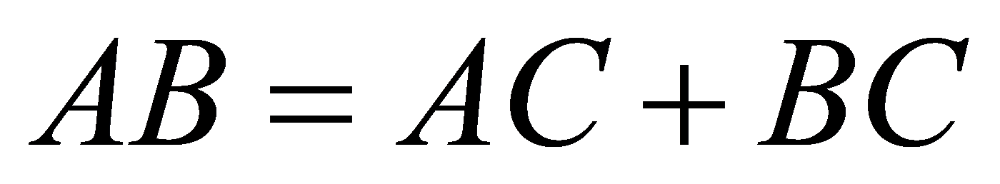
进行判断即可．【详解】解：如图，在平面内，，
∵，，
∴点C为以A为圆心，6为半径，与以B为圆心，4为半径的两个圆的交点，
由于，
所以，点C在线段上，
故选：A．
【变式1】（23-24七年级上·吉林·期末）如图，直线m和直线n相交于点O，对于图形，说法正确的语句有（ ）
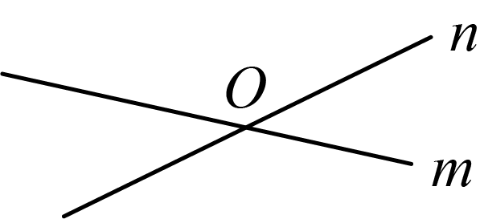
①点O在直线m上．
②点O在直线n上．
③点O在直线m上． 也在直线n上．
④直线m经过点O．
A．1个． B．2个． C．3个． D．4个．
【答案】D
【知识点】点与线的位置关系
【分析】题考查直线、线段、射线的画法，解题的关键是根据点与直线的位置关系进行判断得出答案．
【详解】解：①点O在直线m上，说法正确；
②点O在直线n上，说法正确；
③点O在直线m上，也在直线n上，说法正确；
④直线m经过点O，说法正确；
故选D．
【变式2】（23-24七年级上·河北石家庄·阶段练习）下列几何图形与相应语言描述不相符的是（ ）

A．如图甲所示，直线不经过点P
B．如图乙所示，直线a与直线b交于点O
C．如图丙所示，点C在线段上
D．如图丁所示，线段与射线 一定相交
一定相交
【答案】C
【知识点】画出直线、射线、线段、点与线的位置关系
【分析】本题考查的是直线，射线，线段的含义，点与直线，射线，线段的位置关系，理解作图语言是解本题的关键．
【详解】解：如图甲所示，直线不经过点P，描述正确，故A不符合题意；
如图乙所示，直线a与直线b交于点O，描述正确，故B不符合题意；
如图丙所示，点C在直线上，原描述错误，故C符合题意；
如图丁所示，线段与射线一定相交，描述正确，故D不符合题意；
故选C
【变式3】（2023七年级上·江苏·专题练习）如图，用适当的语句表述图中点与直线的关系，错误的是（ ）
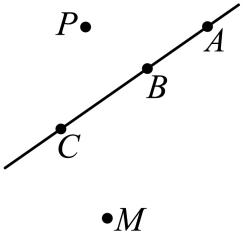
A．点P在直线外 B．点C在直线外
C．直线 不经过点M D．直线经过点B
不经过点M D．直线经过点B
【答案】B
【知识点】点与线的位置关系
【分析】本题考查的是点与直线的位置关系，理解点在直线上，点在直线外，再逐一分析即可得到答案．
【详解】解：点P在直线外，描述正确，故A不符合题意；
点C在直线上，故B符合题意；
线不经过点M，描述正确，故C不符合题意；
直线经过点B，描述正确，故D不符合题意；
故选B
题型03 两点确定一条直线
【典例3】（23-24六年级下·山东东营·开学考试）要在墙壁上固定一根小木条，至少需要两枚钉子，其数学原理是 ．
【答案】两点确定一条直线
【知识点】两点确定一条直线
【分析】本题考查直线的性质，熟练掌握直线的性质是解题的关键；
根据直线的性质即可求解；
【详解】解：要在墙壁上固定一根小木条，至少需要两枚钉子，其数学原理是：两点确定一条直线．
故答案为：两点确定一条直线．
【变式1】（23-24七年级上·河南新乡·期末）如图，木匠师傅经过刨平的木板上的A，B两点，可以弹出一条笔直的墨线，请你解释这一实际应用的数学基本事实是 ．
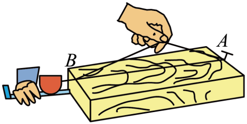
【答案】两点确定一条直线
【知识点】两点确定一条直线
【分析】本题主要考查了两点确定一条直线．根据两点确定一条直线，即可求解．
【详解】解：解释这一实际应用的数学基本事实是两点确定一条直线．
故答案为：两点确定一条直线
【变式2】（23-24六年级下·山东青岛·阶段练习）要种一列排列笔直的树，小明说：只要先定下两棵树的位置，然后其他树的位置就容易确定了，你认为小明这样说根据的数学原理是 ．
【答案】两点确定一条直线
【知识点】两点确定一条直线
【分析】本题考查了直线的性质，根据公理“两点确定一条直线”来解答即可．
【详解】解：要种一列排列笔直的树，小明说：只要先定下两棵树的位置，然后其他树的位置就容易确定了，你认为小明这样说根据的数学原理是两点确定一条直线，
故答案为：两点确定一条直线．
【变式3】（23-24七年级上·福建厦门·期末）暑假期间，小华参加了夏令营打靶瞄准训练，如图所示，打靶瞄准用到的数学原理是 ．

【答案】两点确定一条直线
【知识点】两点确定一条直线
【分析】本题考查直线的性质，掌握“两点确定一条直线”的基本事实是正确判断的关键．根据“两点确定一条直线”进行判断即可．
【详解】解：打靶瞄准用到的数学原理是：两点确定一条直线．
故答案为：两点确定一条直线．
题型04 直线、线段、射线的数量问题
【典例4】（23-24七年级上·河南郑州·期末）如图，小金同学根据图形写出了三个结论：①图中共有6条线段；②图中共有1条直线；③图中射线 与射线
与射线 不是同一条射线．其中结论正确的是（ ）
不是同一条射线．其中结论正确的是（ ）

A．①② B．①③ C．②③ D．①②③
【答案】A
【知识点】直线、射线、线段的联系与区别、直线、线段、射线的数量问题
【分析】此题主要考查了线段、射线、直线的定义，准确识图，理解线段、射线、直线的定义是解决问题的关键．
【详解】解：图中有线段， ，
， ，，
，， ，共6条，
，共6条，
∴结论①正确；
图中共有一条直线，
∴结论②正确；
图中射线可表示为射线，
∴图中射线与射线是同一条射线，
∴结论③不正确．
综上所述：正确的结论是①②．
故选：A．
【变式1】（23-24七年级上·四川成都·开学考试）图中，共有 条线段．
【答案】15
【知识点】直线、线段、射线的数量问题
【分析】本题考查了线段的数量问题．
线段有两个端点，而两个端点间的距离就是这条线段的长度，据此数出两个端点之间的线段即可．
【详解】解：图中共有6个端点，则共有线段 （条）．
（条）．
故答案为：15．
【变式2】（24-25七年级上·全国·单元测试）图中线段有 条，射线有 条．
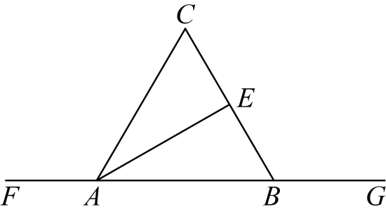
【答案】 6 4
【知识点】直线、线段、射线的数量问题
【分析】本题主要考查学生对线段和射线的认识，注意不要数重或漏数．根据线段和射线的意义分类数一数即可．
【详解】解：线段有：、、、 、
、 、
、 ，共6条；
，共6条；
射线有： 、
、
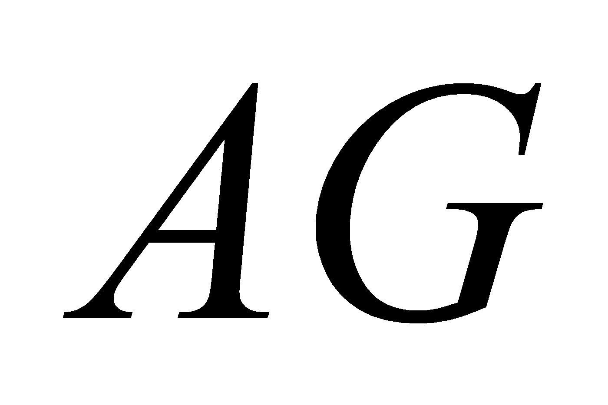
、 、
、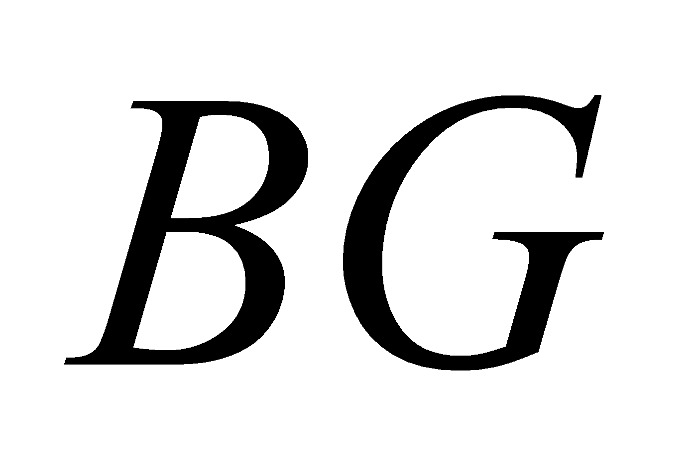
，共4条；故答案为：6，4．
【变式3】（24-25七年级上·全国·课后作业）如图，网格纸中有七个黑点和六个白点，经过同色的三点可以画 条直线．

【答案】3
【知识点】直线、线段、射线的数量问题
【分析】本题考查了直线，根据直线的特点在图中画出满足条件的直线，即可作答．
【详解】作图如下：
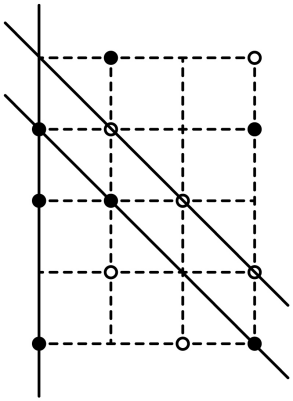
经过同色的三点可以画3条直线，
故答案为：3．
题型05 直线相交的交点个数问题
【典例5】（23-24七年级上·甘肃庆阳·期末）如图，两条直线相交，有1个交点，三条直线相交最多有3个交点，四条直线相交最多有6个交点，则七条直线相交最多有 个交点．
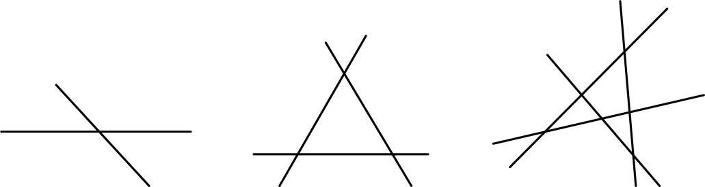
【答案】21
【知识点】图形类规律探索、直线相交的交点个数问题
【分析】本题考查了图形的变化，是一道关于数字猜想的问题，关键是通过归纳与总结，得到其中的规律．
四条直线相交最多的交点个数可通过画图得出交点个数，通过继续增加直线的条数可以找出规律即可解答；
【详解】解： 如图，两条直线相交最多有1个交点，即 ；
；
三条直线相交最多有3个交点，即
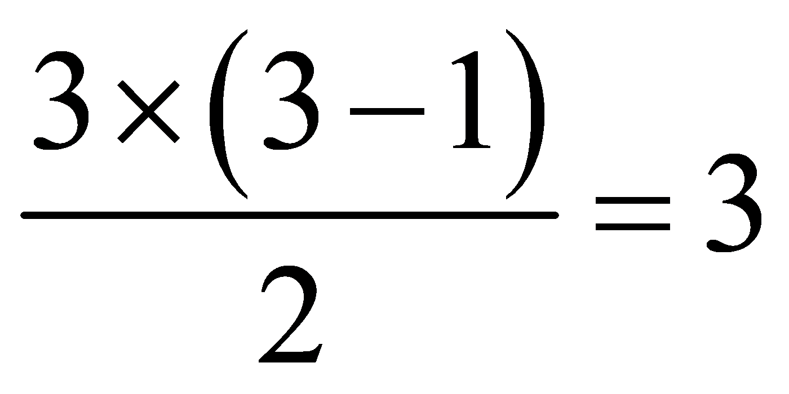
；四条直线相交最多有6个交点，即 ，
，
五条直线相交最多有10个交点，即 ，
，
……
∴n条直线两两相交，最多有
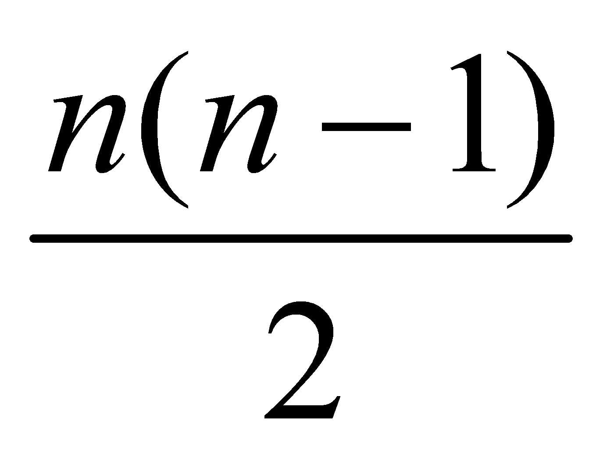
个交点（n为正整数，且 ）．
）．∴当 时，最多有
时，最多有
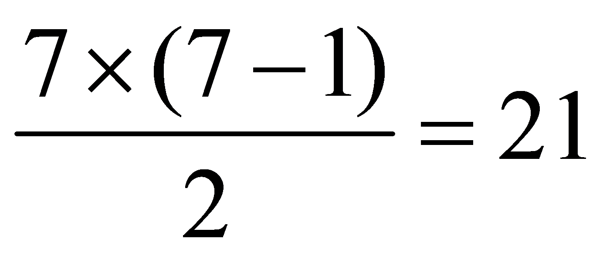
个交点故答案为： ．
．
【变式1】（18-19七年级·吉林长春·期末）一平面内，3条直线两两相交，最多有3个交点；4条直线两两相交，最多有6个交点；5条直线两两相交，最多有10个交点；…；那么，10条直线两两相交，最多有 个交点．
【答案】
【知识点】直线相交的交点个数问题
【分析】此题考查的知识点是相交线，关键是此题在相交线的基础上，着重培养学生的观察、实验和猜想、归纳能力，掌握从特殊到一般猜想的方法．由已知一平面内，三条直线两两相交，最多有3个交点；4条直线两两相交，最多有6个交点；5条直线两两相交，最多有10个交点总结出：在同一平面内，n条直线两两相交，则有 个交点，代入即可求解．
个交点，代入即可求解．
【详解】解：∵3条直线两两相交，最多有3个交点；而 ；
；
4条直线两两相交，最多有6个交点；而
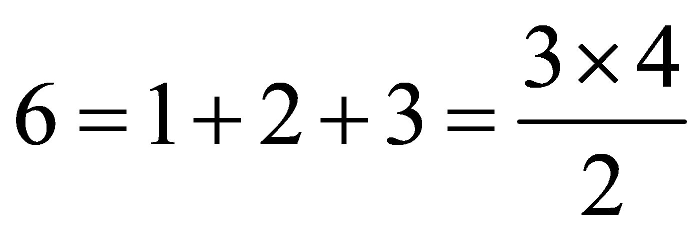
，5条直线两两相交，最多有10个交点；…；而
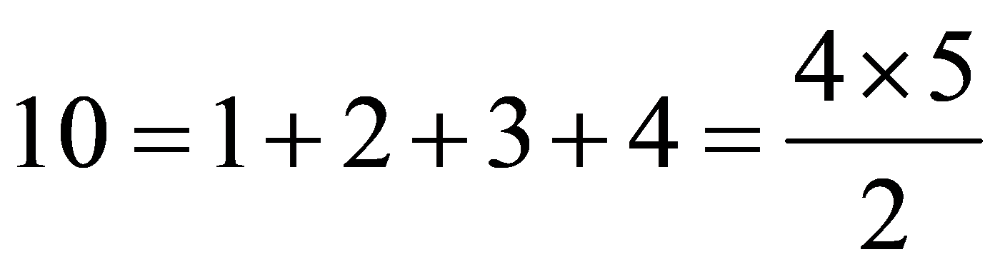
，∴在同一平面内，n条直线两两相交，则最多有 个交点，
∴10条直线两两相交，交点的个数最多为
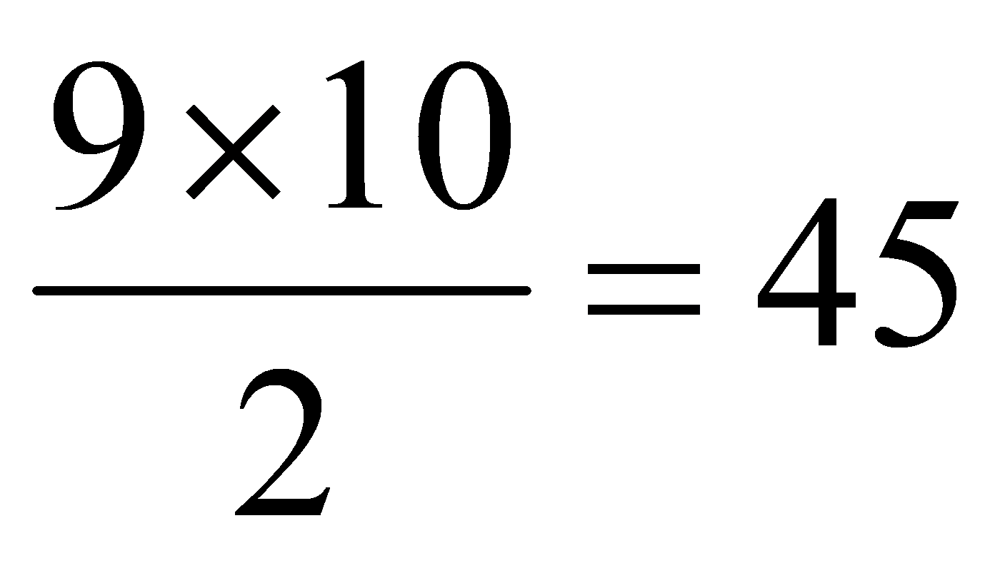
．故答案为：．
【变式2】（2024七年级·全国·竞赛）某市2013年计划投资160亿同时建设9条地铁轨道线，假设要在每个轨道线交叉口建一个报刊亭，且任意两条轨道线至多交叉一次，那么这样的报刊亭最多可建 个．
【答案】36
【知识点】直线相交的交点个数问题
【分析】此问题相当于“9条直线相交，最多有几个交点”的问题，利用公式
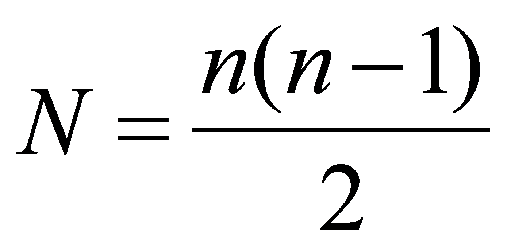
直接计算即可.【详解】∵9条地铁轨道线相当于有9条直线，每一条直线最多与其它直线有8个交点，
∴最多有
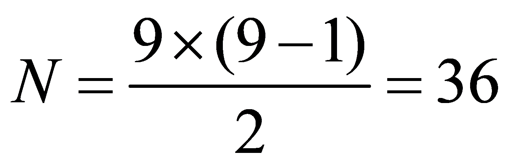
个交点，即这样的报亭最多有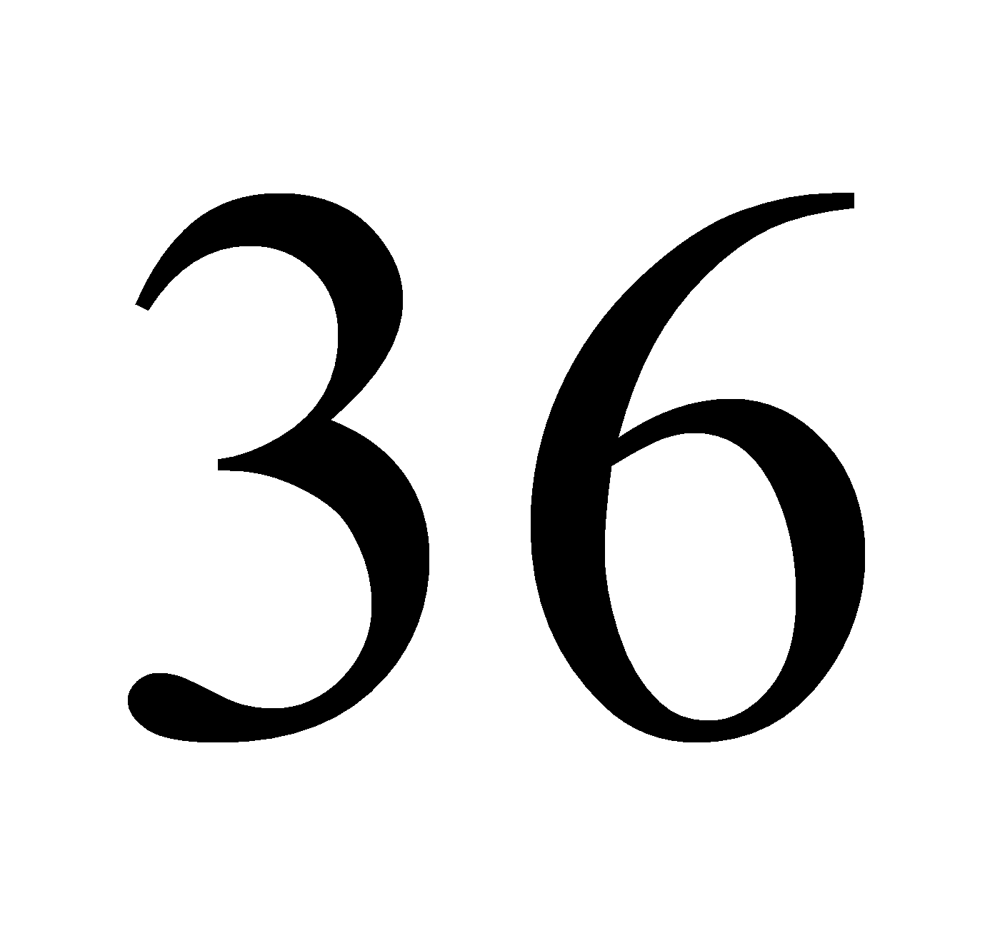
个，故答案为：．
【变式3】（2024·湖北孝感·一模）小明学习相交直线时发现：3条直线两两相交最多有3个交点，4条直线两两相交最多有6个交点，按照这样的规律，
（1）5条直线两两相交最多有 个交点；
（2）n条直线两两相交最多有 个交点．（用含有字母n的式子表示， ）
）
【答案】 10
【知识点】数字类规律探索、直线相交的交点个数问题
【分析】本题考查了规律型—数字的变化类；根据所给数据，发现规律：n条直线两两相交，最多有 个交点，然后进行计算即可．
个交点，然后进行计算即可．
【详解】解：（1）∵两条直线最多有1个交点，
∴有n条直线，每一条直线与其他 条直线都最多有1个交点，且两条直线的交点只算作一个，
条直线都最多有1个交点，且两条直线的交点只算作一个，
∴有n条直线，两两相交最多有个交点，
∴5条直线两两相交最多有个交点，
故答案为：10；
（2）由（1）得n条直线两两相交最多有个交点，
故答案为：．
题型06 画直线、射线、线段
【典例6】（23-24七年级上·新疆喀什·期末）如图，在平面上有A，B，C，D四点，请按照下列语句画出图形．
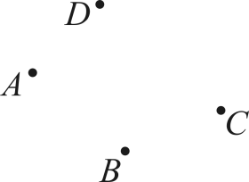
(1)画直线；
(2)画射线；
(3)连接B，C；
(4)线段和线段相交于点O．
【答案】(1)见详解
(2)见详解
(3)见详解
(4)见详解
【知识点】画出直线、射线、线段
【分析】本题主要考查了作图，作直线，射线，线段，以及两线段的交点等作图知识．
（1）过点A、B作直线，要向两方延伸；
（2）过B、D作射线，向D点方向延伸，B点方向不延伸∶
（3）就是作线段；
（4）连接、交点标注为O；
【详解】（1）解：直线如下图所示：
（2）解：射线如下图所示：
（3）解：线段如下图所示：
（4）解：线段和线段相交于点O如下图所示：
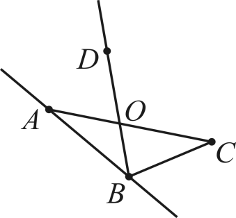
【变式1】（23-24七年级上·吉林延边·期末）已知A，B，C，D四点（如图）：

(1)画线段，射线，直线；
(2)连，与直线交于点 ；
；
(3)连接，并延长线段与射线交于点 ；
；
(4)连接，并延长线段与线段的反向延长线交于点 ．
．
【答案】(1)见解析
(2)见解析
(3)见解析
(4)见解析
【知识点】画出直线、射线、线段
【分析】本题主要考查了直线、射线、线段的特征，准确掌握直线、线段、射线的特征是解题的关键，属于基础题．
（1）根据直线，射线，线段的特征可作图求解；
（2）根据直线，射线，线段的特征可作图求解；
（3）根据直线，射线，线段的特征可作图求解；
（4）根据直线，射线，线段的特征可作图求解．
【详解】（1）解：根据题意画出图如图所示；
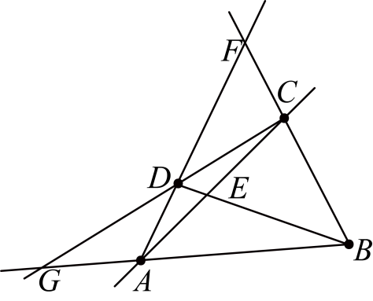
（2）解：根据题意画出图如图所示；
（3）解：根据题意画出图如图所示；
（4）解：根据题意画出图如图所示．
【变式2】（22-23七年级上·河南郑州·阶段练习）如图，已知四点A，B，C，D，按下列要求作图：
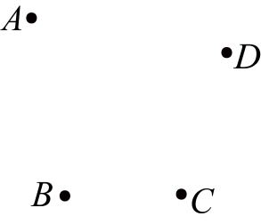
(1)连接 ，BD交于点O；
，BD交于点O；
(2)作射线AB，射线CD；
(3)反向延长射线CD交射线AB于点P；
(4)图中有几条线段？几条射线？几条直线？
【答案】(1)见解析
(2)见解析
(3)见解析
(4)有线段共 条，射线
条，射线 条，直线
条，直线 条
条
【知识点】画出直线、射线、线段
【分析】本题考查了复杂作图，掌握直线、线段和射线的意义是解题的关键.
（1）根据线段的特点作图；
（2）根据射线的特点作图；
（3）根据射线的特点作图；
（4）根据线段、直线、射线的意义求解.
【详解】（1）如图：线段
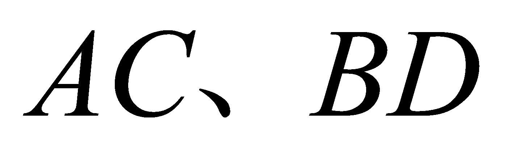
，点 即为所求；
即为所求；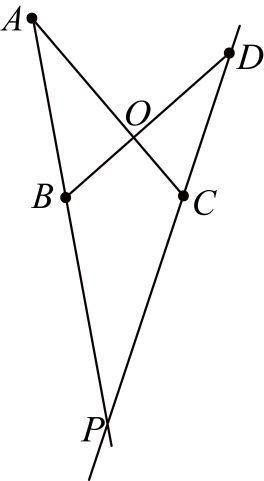
（2）如图：射线 即为所求；
即为所求；
（3）点即为所求；
（4）图中有线段共条，射线条，直线条.
【变式3】（22-23七年级上·云南昆明·期末）如图所示，平面上有五个点A、B、C、D、E．按下列要求画出图形．
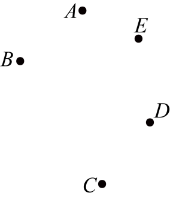
(1)连接；
(2)画直线交于点M；
(3)画射线；
(4)请在直线上确定一点N，使B、E两点到点N的距离之和最小，并说明理由（保留作图痕迹）．
【答案】(1)见解析
(2)见解析
(3)见解析
(4)见解析，理由见解析
【知识点】两点之间线段最短、画出直线、射线、线段
【分析】本题考查了画直线、射线、线段，两点之间线段最短．掌握直线、射线、线段的定义及画法是解题关键．
（1）根据线段的定义作图即可；
（2）根据直线的定义作图即可；
（3）根据射线的定义作图即可；
（4）连接，由两点间线段最短可知，与的额交点即为点 ．
．
【详解】（1）解：如图，线段即为所求作；
（2）解：如图，点M即为所求作；
（3）解：射线即为所求作；
（4）解：如图，点即为所求作；
理由为：两点间线段最短．
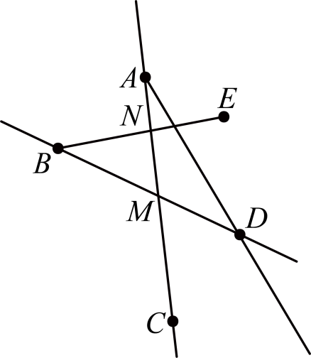

一、单选题
1．（2024·河北石家庄·模拟预测）下列各图中，表示“射线 ”的是（ ）
”的是（ ）
A． B．
C． D．
【答案】B
【知识点】直线、射线、线段的联系与区别
【分析】本题考查了射线的定义，射线是指由线段的一端无限延长所形成的直的线，射线仅有一个端点，无法测量，射线是指端点在点A上，据此即可作答．
【详解】解：依题意，
射线是指射线的端点在点A上．
故选：B．
2．（24-25七年级上·全国·课后作业）挂条幅时，要钉两个钉子才能牢固，其中的数学道理是（ ）．
A．两点之间线段最短 B．两点确定一条直线
C．两点能够确定多条直线 D．点动成线
【答案】B
【知识点】两点确定一条直线
【分析】本题考查了两点确定一条直线，熟练掌握直线的性质是解题的关键；经过两点有且只有一条直线，简称：两点确定一条直线； 根据两点确定一条直线解答即可．
【详解】解：挂条幅时，要钉两个钉子才能牢固，其中的数学道理是：两点确定一条直线，
故选：
3．（22-23六年级下·山东泰安·期中）如图，下列说法正确的是（ ）
A．直线 和直线
和直线 不是同一条直线
不是同一条直线
B．点 是直线的一个端点
是直线的一个端点
C．射线 和射线不是同一条射线
和射线不是同一条射线
D．点 在线段上
在线段上
【答案】D
【知识点】直线、射线、线段的联系与区别
【分析】本题主要考查了直线，射线，线段的定义．根据直线，射线，线段的定义，逐项判断即可求解．
【详解】解：A．直线和直线是同一条直线，故本选项错误，不符合题意；
B．直线没有端点，故本选项错误，不符合题意；
C．射线和射线是同一条射线，故本选项错误，不符合题意；
D．点在线段上，故本选项正确，符合题意；
故选：D．
4．（23-24七年级上·山东聊城·阶段练习）下列说法错误的是（ ）
A． 直线l经过点A B． 点C在线段上
直线l经过点A B． 点C在线段上
C． 射线
射线 与线段有公共点 D． 直线a，b相交于点A
与线段有公共点 D． 直线a，b相交于点A
【答案】B
【知识点】直线、射线、线段的联系与区别、点与线的位置关系、直线相交的交点个数问题
【分析】根据点和直线的位置关系，相交线的有关内容判断即可．
【详解】解：A、由图可得，点A在直线l上，故直线l经过点A，故本选项不符合题意；
B、由图可得，点C在线段的上方，故点A不在线段上，故本选项符合题意；
C、由图可得，射线与线段有交点，故射线与线段有公共点，故本选项不符合题意；
D、由图可得，点A为直线a、b的公共点，故直线a、b相交于点A，故本选项不符合题意．
故选：B．
【点睛】本题考查了直线、射线、线段的应用，主要考查学生的理解能力和应用能力，应用了数形结合思想．
5．（23-24七年级上·山东德州·期末）如图，有一种电子游戏，电子屏幕上有一条直线，在直线上有A，B，C，D四点．点P沿直线l从右向左移动，当出现点P与A，B，C，D四点中的至少两个点距离相等时，就会发出警报，则直线l上会发出警报的点P最多有（ ）个．
A．3 B．4 C．5 D．6
【答案】C
【知识点】直线、线段、射线的数量问题、与线段有关的动点问题
【分析】本题考查的是直线与线段的相关内容，正确理解题意、利用转化的思想去思考线段的总条数是解决问题的关键，可以减少不必要的分类．点P与A，B，C，D四点中的至少两个点距离相等时，也就是点P恰好是其中一条线段中点．而图中共有线段5条，所以出现报警次数最多5次．
【详解】解：由题意知，当P点经过任意一条线段中点的时候会发出警报，
∵图中共有线段 、、
、、 、
、 、
、 ，
，
∴发出警报的点P最多有5个．
故选：C．
二、填空题
6．（23-24七年级上·福建福州·期末）如图，建筑工人砌墙时，经常先在两端立桩拉线，然后沿着线砌墙，读用所学的数学知识解释它这样操作的原因是

【答案】两点确定一条直线
【知识点】两点确定一条直线
【分析】此题主要考查直线的性质：两点确定一条直线，熟记性质是解题的关键．
【详解】建筑工人砌墙时经常先在两端立桩、拉线，然后沿着线砌出笔直的墙，其依据的基本事实是两点确定一条直线．
故答案为：两点确定一条直线．
7．（24-25七年级上·全国·课后作业）如图， 是直线l上的三个点．
是直线l上的三个点．
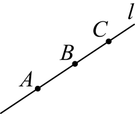
（1）图中共有 条线段；
（2）图中以点B为端点的射线有 条，分别是 ；
（3）直线l还可以表示为 ．
【答案】 3 2 射线 、射线 直线或直线
、射线 直线或直线 或直线或直线或直线或直线
或直线或直线或直线或直线
【知识点】直线、射线、线段的联系与区别
【分析】此题主要考查了线段、直线、射线，关键是掌握线段的定义．
（1）根据线段概念即可求得答案；
（2）根据射线概念即可求得答案；
（3）根据直线的概念即可求得答案．
【详解】解：（1）图中共有3条线段，线段、线段、线段；
故答案为：3；
（2）图中以点B为端点的射线有2条，射线、射线；
故答案为：2，射线、射线；
（3）直线l还可以表示为：直线或直线或直线或直线或直线或直线；
故答案为：直线或直线或直线或直线或直线或直线．
8．（22-23七年级上·河南开封·期末）直线
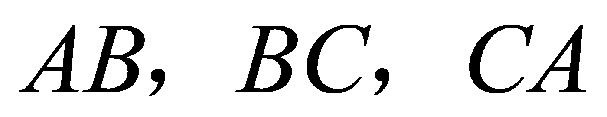
的位置关系如图所示，下列语句：①点在直线上；②直线经过点 ；③直线
；③直线 交于点
交于点 ；④点在直线AB外；⑤直线两两相交．以上表述正确的有 ．（只填写序号）
；④点在直线AB外；⑤直线两两相交．以上表述正确的有 ．（只填写序号）
【答案】②③④⑤
【知识点】点与线的位置关系、相交线
【分析】本题考查了点和直线的位置关系，直线和直线的位置关系，根据图性逐项判断即可求解，正确识图是解题的关键．
【详解】解：由图可知，点在直线外，故①错误；
由图可知，直线经过点，故②正确；
由图可知，直线交于点，故③正确；
由图可知，点在直线AB外，故④正确；
由图可知，直线两两相交，故⑤正确；
∴以上表述正确的有②③④⑤，
故答案为：②③④⑤．
9．（22-23七年级上·甘肃酒泉·期末）素养提升：
如果平面上有 个点，且每3个点均不在1条直线上，那么最多画 条直线．
个点，且每3个点均不在1条直线上，那么最多画 条直线．
能否通过以上发现，解决问题：某班45名同学在毕业的一次聚会中，若每两人握1次手问好，那么一共要握 次手．
【答案】 990
【知识点】直线、线段、射线的数量问题
【分析】本题主要考查规律型 图形的变化类，根据每一个点可以与其他
图形的变化类，根据每一个点可以与其他 个点分别连接生成条直线，去掉重复的即可得到
个点分别连接生成条直线，去掉重复的即可得到 个点（每3个点均不在1条直线上），最多画（条
个点（每3个点均不在1条直线上），最多画（条
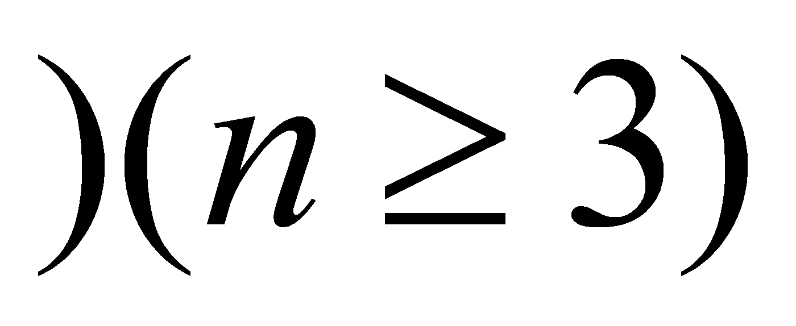
直线．根据每一个人可以与其他44握手一次，每人44次，即可求解．【详解】∵每一个点可以与其他个点连接生成条直线，
∴个点最多画直线数量为
∵某班45名同学在毕业的一次聚会中，若每两人握1次手问好，则每一个人可以与其他44握手一次，每人44次，
∴45人一共要握手
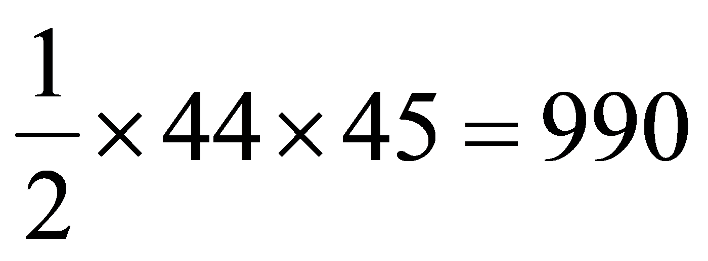
（次 ．
．故答案为：，990．
10．（23-24七年级上·湖北武汉·阶段练习）已知2条直线相交，有1个交点，3条直线相交最多有3个交点，4条直线相交最多有6个交点，…，像这样，n条直线相交最多有 个交点．
【答案】
【知识点】数字类规律探索、直线相交的交点个数问题
【分析】此题考查的是相交线及规律性题目，解答此题关键是根据直线的条数变化得到的交点个数的变化，得出规律，再利用规律进行计算即可解答问题．
2条直线相交有1个交点，3条直线相交最多有 个交点，4条直线相交最多有
个交点，4条直线相交最多有 个交点．．．．．．．．．．按这样的规律，条直线相交的交点最多是
个交点．．．．．．．．．．按这样的规律，条直线相交的交点最多是
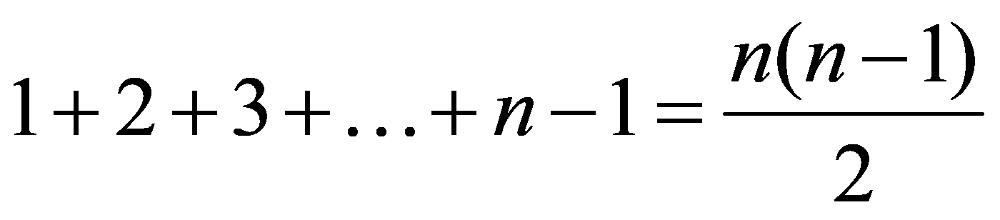
个交点．【详解】解：2条直线相交有1个交点，
3条直线相交最多有个交点，
4条直线相交最多有个交点，
．．．，
按照这样的规律，条直线相交的交点最多是
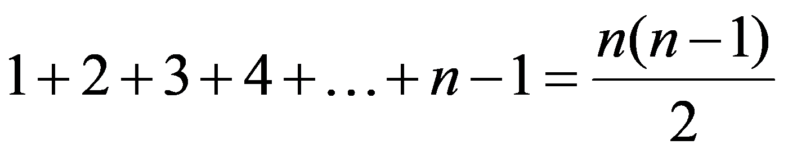
个交点，故答案为：．
三、解答题
11．（23-24七年级上·全国·课后作业）如图所示，共有多少条直线、射线、线段？请依次指出．

【答案】见解析
【知识点】直线、射线、线段的联系与区别
【分析】根据直线、射线和线段的定义进行判断即可得到答案．
【详解】题图中共有2条直线，即直线，；
13条射线，即射线，射线，射线，射线，射线，射线，射线，还有6条不可以表示的；
6条线段，即线段，线段 ，线段
，线段 ，线段，线段，线段．
，线段，线段，线段．
【点睛】本题考查直线、线段和射线的定义，直线：能够向两端无限延伸的线；射线：直线上的一点和这点一旁的部分叫射线，这个点叫做射线的端点；线段：直线上两点和中间的部分叫做线段，这两个点叫线段的端点．
12．（22-23七年级上·江西上饶·期末）如图，平面内有四个点 ，根据下列语句画图．
，根据下列语句画图．

(1)画线段 ；
；
(2)画直线；
(3)画射线和．
【答案】(1)见解析
(2)见解析
(3)见解析
【知识点】画出直线、射线、线段
【分析】本题考查了对直线、射线、线段定义的应用，主要考查学生的理解能力和画图能力．
（1）根据线段的定义画出即可；
（2）根据直线的定义画出即可；
（3）根据射线的定义画出即可．
【详解】（1）解：如图所示，线段为所求；
（2）解：如图所示，直线为所求；
（3）解：如图所示，射线和为所求．
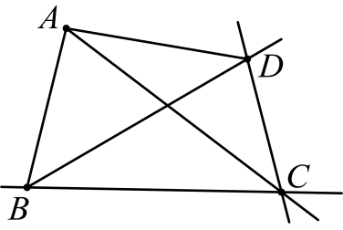
13．（2024七年级下·云南·专题练习）如图，平面上有 四个点，请根据下列语句作图．
四个点，请根据下列语句作图．

(1)画直线BD；
(2)画线段AD与线段 相交于点O；
相交于点O；
(3)画射线AB与射线CD相交于点P．
【答案】(1)见解析
(2)见解析
(3)见解析
【知识点】画出直线、射线、线段
【分析】本题考查画直线、射线、线段，根据直线、射线、线段的定义画出图形即可．
（1）作直线BD即可；
（2）作线段AD与线段，交点标记为O即可；
（3）作射线AB与射线CD，交点标记为P即可．
【详解】（1）解：直线BD如图所示；
（2）线段AD与线段相交于点O，如图所示；
（3）射线AB与射线CD相交于点P，如图所示．
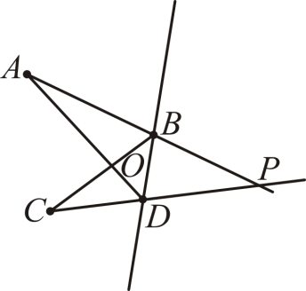
14．（23-24七年级上·福建泉州·期末）我们知道，两条直线相交最多有一个交点，三条直线相交最多有三个交点，四条直线相交最多有6个交点，…，如图所示．

(1)五条直线相交最多有______个交点，六条直线相交最多有______个交点；
(2)若有条直线相交，求最多交点的个数．（用含的代数式表示）
【答案】(1)10；15
(2)有条直线相交，最多交点的个数为．
【知识点】图形类规律探索、直线相交的交点个数问题
【分析】此题考查图形规律的探究．
（1）根据图形相邻两个图形的交点个数的差为从2开始的连续整数，然后列式计算即可得解；
（2）根据（1）得到的规律，即可得解．
【详解】（1）解：三条直线交点最多为个，
四条直线交点最多为
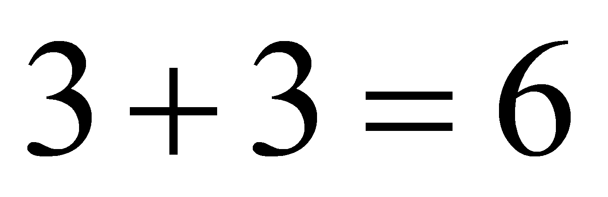
个，五条直线交点最多为
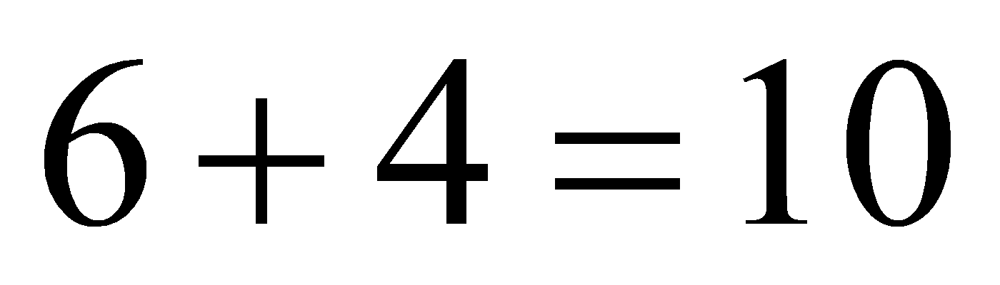
个，六条直线交点最多为
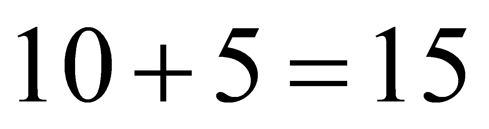
个；故答案为：10；15；
（2）解：n条直线交点最多为
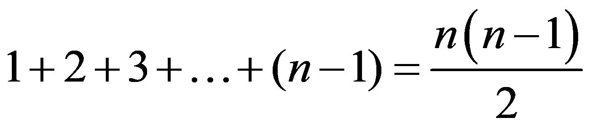
．答：有条直线相交，最多交点的个数为．
15．（23-24六年级下·山东济南·开学考试）若直线上有两个点，则以这两点为端点可以确定 一条线段.请仔细观察图形，解决下列问题：
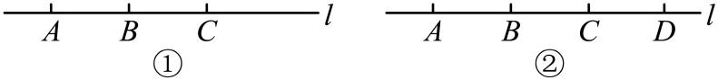
试验观察：
（1）如图①所示，直线l上有3个点A，B， C，则可以确定 条线段.
（2）如图②所示，直线l上有4个点 A，B， C，D，则可以确定 条线段.
探索归纳：
（3）若直线上有n个点，一共可以确定多少条线段?
（4）如图③所示，由泰山始发终点至青岛的某次列车，运行途中停靠的车站依次是泰山、济南、淄博、潍坊、青岛，那么要为这次列车制作的单程火车票有（ ）

A．5 种 B．10 种 C．15 种 D．20 种
【答案】（1）3（2）6（3）
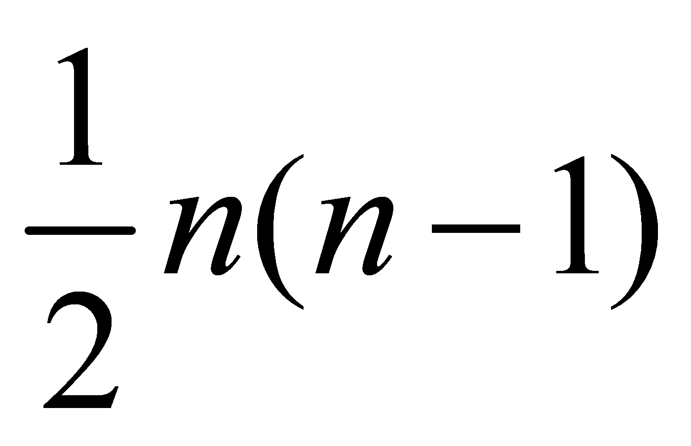
（4）B【知识点】画出直线、射线、线段、直线、线段、射线的数量问题
【分析】（1）直接利用线段的定义即可得到结论．
（2）直接利用线段的定义即可得到结论．
（3）根据（1）、（2）得到的结论进行解答．
（4）单程两个站点有一种票，相当于两两组合，由结论式来解答．
此题考查直线、线段、射线，关键是掌握结论式．以及根据直线、线段、射线的区别解答．
【详解】解：（1）直线 上有、、，线段总条数是：
上有、、，线段总条数是： ，
，
故答案为：3；
（2）若直线上有四个点、、、，线段总条数是： ，
，
故答案为：6；
（3）若直线上有个点时，线段总条数
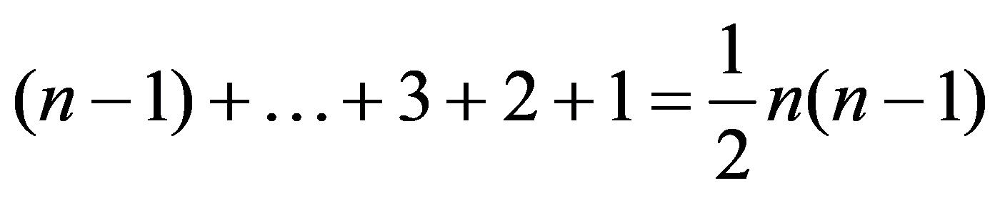
．（4）解：
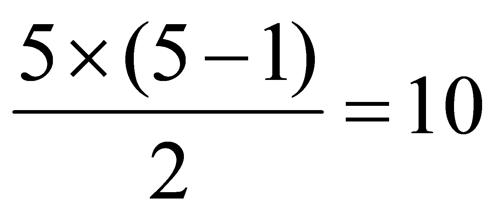
（种， 要为这次列车制作的单程火车票10种．
要为这次列车制作的单程火车票10种．
故选：B．